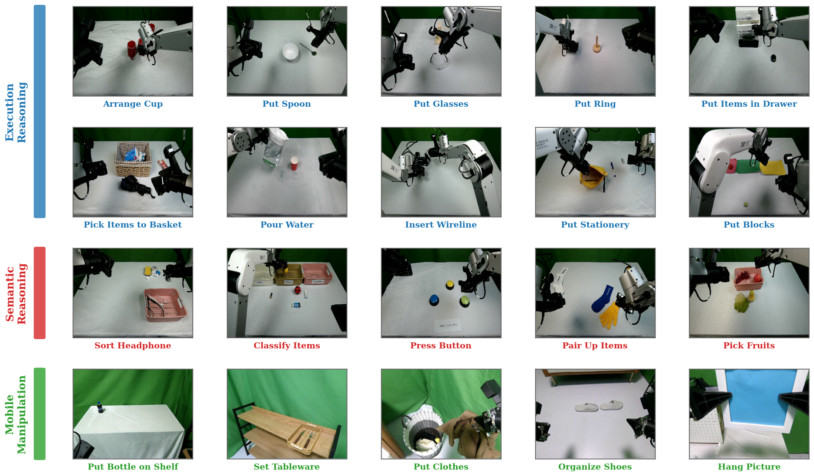

Method at a glance
- Plan the stageUse the task instruction, current images, and a mission-specific plan to choose the active subtask.
- Generate actionsCondition one multi-task VLA checkpoint on images, robot state, and the current task/subtask text.
- Collect completion evidenceUpdate a latest-observation queue, progress predictor, and compact evidence bank asynchronously.
- Verify and advanceAdvance the plan only when completion checks agree; decode actions for tabletop or mobile control.
Schematic summary of the project workflow.
A competition system for long-horizon manipulation
ManipArena combines execution reasoning, semantic reasoning, and mobile manipulation. A successful system must understand task order and scene conditions while also producing coordinated motion for two arms and, on mobile tasks, the head, lift, and base.
My project placed fourth among 32 teams in the workshop challenge. Its implementation also continued evolving after the competition. The architecture described here covers that broader system development, with the scored competition placement kept separate from later configuration choices.
My contribution
- Built a common training and inference representation for all 20 real tasks, preserving the distinct semantics of end-effector pose, gripper commands, head/lift motion, and base velocity.
- Adapted the π₀.₅ policy with LoRA and integrated it with the three-camera observation stream and task-conditioned action interface.
- Developed the asynchronous planner–predictor–verifier loop, task mission specifications, completion-evidence requirements, and guarded subtask transitions.
- Integrated task-specific perception and action-side checks where generic progress recognition was insufficient, and built action-prediction diagnostics to inspect temporal and coordinate errors.
One policy, two decision timescales
The VLA branch uses OpenPI's π₀.₅ configuration with a LoRA-adapted Gemma vision-language branch and action expert. It receives front and two wrist-camera streams at a 224 × 224 model input size, together with robot state and task text. The all-task configuration uses a 32-dimensional padded action space and a 32-step action horizon.
The visual-language agent handles the active stage and its completion, while OpenPI predicts continuous robot action chunks. At episode start, the first planning call is synchronous so that the initial action has a defined task condition. Subsequent observations enter a latest-only queue; the controller continues with the cached valid subtask while the reasoning worker processes new evidence.
The default inference path uses one main policy checkpoint for both whole-task and subtask-conditioned actions. Optional text-guidance and second-stage configurations are separate experimental choices. Task registration also matters: fourteen tasks use subtask missions, while six pass their full instruction directly to the policy.
Progress recognition grounded in evidence
A progress predictor proposes the supported prefix of the current subtask's fine actions. A compact evidence bank retains useful image pairs, so a transient interaction can remain available after the scene changes. A verifier runs when completion is plausible, rather than necessarily on every camera frame.
Advancement requires agreement about the same active subtask, the required observed evidence, an actual verified completion, and sufficient confidence. Debouncing and per-frame evidence limits reduce accidental jumps through multiple stages. For example, bringing a bottle close to a cup is insufficient evidence of pouring: the mission checks the relevant tilt, transfer, release, and subsequent state.
Some tasks add SAM3 or geometric/action-side guards. These complement the learned policy and mission logic; they do not turn the system into an unrestricted universal manipulation planner.
Data and action-space engineering
Training mixes the 20 ManipArena real-task demonstration datasets in LeRobot format. The raw tabletop and mobile records use different vector layouts. I map them into a common representation while preserving what each channel physically means.
Tabletop state and action use fourteen dual-arm end-effector/gripper channels. Mobile state adds head and lift information for seventeen dimensions; mobile action additionally includes three base-velocity controls for twenty dimensions. Both action layouts are padded to the model's 32-dimensional space.
End-effector pose and head/lift deltas are handled separately from absolute gripper and base-velocity commands. At inference, decoded outputs restore the appropriate tabletop or mobile control protocol. This interface work is essential for sharing a policy without silently changing the meaning of its actions.
Training, diagnosis, and lessons
The retained configuration finetunes with LoRA, AdamW, and a warmup-plus-cosine learning-rate schedule. Open-loop comparisons against demonstration actions provide diagnostics across the real-task suite; closed-loop task completion additionally depends on planning, perception, action execution, and recovery working together.
The competition and subsequent development strengthened my ability to connect a foundation model to a complete robot system: define a usable data contract, adapt the controller, manage reasoning latency, and make task transitions depend on observable evidence. The resulting system brings model training, concurrent software, and physical task semantics into one workflow.
Project visuals


Related resources
Based on the project's retained training/deployment implementation and summaries. Competition placement is recorded in the CV; the detailed system description includes subsequent development.